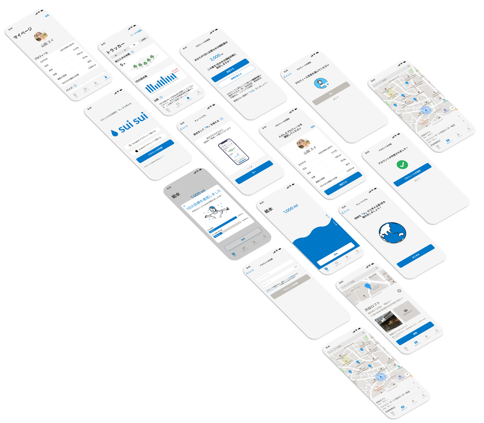

プロジェクトの概要
背景
日本におけるペットボトルのリサイクル率は高い水準ですが、よりエコであるためにはそもそもペットボトルを買わない方が良いはず。また、日本ではあまり水を飲むことによる健康効果が認知されていないように感じられます。
課題
どのようにして、マイボトルを使って水を飲むという、健康的かつエコな習慣を確立することができるだろうか？
解決策
今回は、給水を「ゲーム化」して、給水を記録したり、近くの給水所を探せるアプリを作りました。
UI/UXデザイン
日本におけるペットボトルのリサイクル率は高い水準ですが、よりエコであるためにはそもそもペットボトルを買わない方が良いはず。また、日本ではあまり水を飲むことによる健康効果が認知されていないように感じられます。
どのようにして、マイボトルを使って水を飲むという、健康的かつエコな習慣を確立することができるだろうか？
今回は、給水を「ゲーム化」して、給水を記録したり、近くの給水所を探せるアプリを作りました。
このプロジェクトは個人制作として取り組みました。「身の回りのエコ」に関心があったので、気候変動の問題について、個人レベルで取り組めることはないか？ということをテーマに据えてみました。
人間中心設計のアプローチをベースに、まず「身の回りのエコ」についてユーザーインタビューを実施し、デザインで解決する課題を定義し、解決策を設計・評価しました。

まず3人のモニターに対してユーザーインタビューを実施し、「身の回りのエコ」について理解することから始めました。「どういう行動をエコと捉えているか？」「エコな行動を促進する要素や阻害する要素はどういったものがあるか？」といった疑問に対してヒアリングをしていきました。
インタビューの後、得られた発言を親和図法（Affinity diagram）で分析してみました。

その結果、大きく2つのことが分かりました：
この結果を踏まえて、「水をマイボトルでたくさん飲むこと」をサポートしてくれることで、エコ＋健康価値を享受できるアプリが良いのでは？と思いつきました。そこでもう少しデスクリサーチ をしてみたところ、以下のことが分かりました：
このリサーチ結果を踏まえて、「給水アプリ」のデザイン課題をこのように定めました：どのようにして、マイボトルを使って水を飲むという、健康的かつエコな習慣を確立することができるだろうか？
この課題を解決するためのアプリの機能要件定義に際して、「習慣の確立」をどのようにサポートできるか、が最も重要だと考えました。そこで、いくつかの文献 を参考にして、「他ユーザーとの比較」や「ゲーム化」が行動変容に繋がるのではないか、という考えに至り、日々の給水を記録するベーシックな機能以外にもゲーム要素を加えていきました。
まず、機能についての考えを整理するために、ローファイのスケッチを描き、ユーザー2名にコンセプトを評価してもらいました。

ゲーム要素が多すぎて、逆に使いづらいというのがもっぱらの評価でした。特に、「リーダーボード」（他のユーザーと給水量をランキング形式で競う機能）に違和感があったようでした（確かに、人それぞれ一日に飲むべき水の量が違うのに、ランキングで競うのはおかしいと気づきました）。そこで、不要なゲーム要素を引いていき、アプリをもう少しシンプルにしていきました。
またスケッチと同時並行でビジュアルシステムも作っていきました。給水はどうしても面倒な作業だと思われやすいと感じ、「シンプルで可愛く、使いたくなる」ビジュアルを目指しました。

最後に、ローファイのスケッチとビジュアルシステムを組み合わせて、ハイファイのプロトタイプを完成させました。
このアプリの最も重要な要素の一つである「習慣作り」はFigmaなどのプロトタイピングツールではなかなか評価しづらいと感じました。むしろ、実際にMVPを作ってユーザーにダウンロードしてもらい、数週間単位で試してもらう必要があると感じました。
また、“best interface is no interface” （= No UI）ということも頭に入れておく必要があります。このアプリを使う上での最大の障壁の一つは間違いなく「給水の度にアプリを開いてマニュアルに記録する」必要性だと思うので、それ自体を自動化できればより良いユーザー体験を提供できる気がしています（例：スマートボトルで給水を自動で記録）。スマートボトルが難しければ、せめてウィジェットを用意してアプリを開く必要性をなくすこともできると思います。